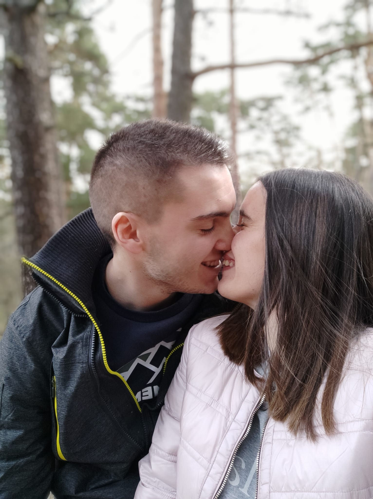
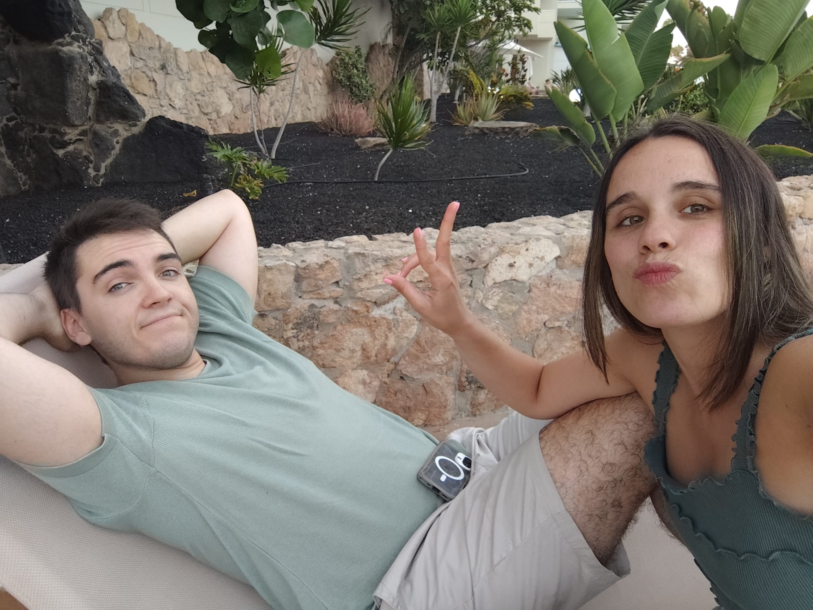

Todo empezó con un carnet de conducir.
Nos conocimos haciendo el examen práctico. No hubo música de película. Solo dos personas intentando que el examinador no les suspendiera.

UNA PEQUEÑA HISTORIA
Lo que empezó en un examen práctico de conducir terminó convirtiéndose en una vida compartida, muchos viajes y unas cuantas excusas para coger el mismo AVE.

ARCHIVO2014 — 2027
Nos conocimos haciendo el examen práctico. No hubo música de película. Solo dos personas intentando que el examinador no les suspendiera.
Íbamos y volvíamos a Madrid en AVE para ir a la Universidad. Poco a poco empezamos a conocernos de verdad.
“¿A qué hora coges el tren?” se convirtió en una pregunta bastante frecuente. Qué cosas.
Nuestro primer viaje juntos. A estas alturas ya había pocas dudas. Decidimos comprobarlo viajando.
Desde entonces compartimos casa, viajes, planes, risas y discusiones importantísimas sobre quién tiene razón. La investigación continúa.
PRÓXIMA PARADA
15 · 05 · 2027
CUENTA ATRÁS
MANUAL DE SUPERVIVENCIA · 15.05.27
Probablemente nosotros. Pero hemos decidido que, después de tantos años, ya no tiene sentido intentar evitarlo.
Y AHORA, LO IMPORTANTE
Después de tantos años consiguiendo coincidir en trenes, nos gustaría saber si vais a coincidir con nosotros el 15 de mayo.
El formulario de confirmación definitivo lo conectaremos en la siguiente versión.